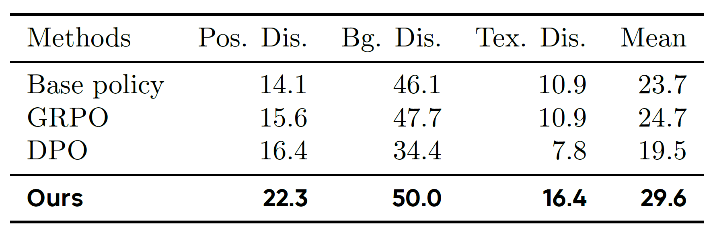

Abstract
Vision-Language-Action (VLA) models have shown strong potential for general-purpose robotic manipulation, but their reliance on expert demonstrations limits their ability to learn from failures and perform self-corrections. Reinforcement learning (RL) addresses these through self-improving interactions with the physical environment, but suffers from high sample complexity on real robots. We introduce World-Model-based Policy Optimization (WMPO), a principled framework for on-policy VLA RL without interacting with the real environment. In contrast to widely used latent world models, WMPO focuses on pixel-based predictions that align the "imagined" trajectories with the VLA features pretrained with web-scale images. Crucially, WMPO enables the policy to perform on-policy GRPO that provides stronger performance than the often-used off-policy methods. Extensive experiments in both simulation and real-robot settings demonstrate that WMPO (i) substantially improves sample efficiency, (ii) achieves stronger overall performance, (iii) exhibits emergent behaviors such as self-correction, and (iv) demonstrates robust generalization and lifelong learning capabilities.
Methodology
WMPO starts from an initial state \(s_0\). The overall training procedure consists of three components: (1) Imagined Trajectory Generation, where policy model \(\pi_{\theta_{\text{old}}}\) and world model \(p_\phi\) interact alternately to generate a full imagined trajectory; (2) Trajectory Sampling, where multiple trajectories are sampled and evaluated by the reward model \(R_\psi\); and (3) Policy Update, where the policy parameters \(\theta\) are optimized via Equation 4. This process is iteratively repeated throughout training.

Figure 2. Illustration of Our Proposed World Model-based Policy Optimization (WMPO)
Results and Analysis
Comparison with GRPO and DPO
We compare WMPO with two established RL algorithms, GRPO and DPO, both widely used for optimizing large language models. To ensure fairness, all methods are allocated the same real rollout budget \(P\) (i.e., the number of full real trajectories available for policy optimization). We consider both online and offline baselines: GRPO is implemented in an online setting, where the policy is updated directly from trajectories collected in the environment; DPO is implemented in an offline setting, where the base policy serves as the reference and trajectory pairs (success vs. failure) are constructed for optimization using the standard DPO loss. Unlike GRPO, which discards trajectories after each update, DPO can repeatedly reuse collected data, but it lacks the ability to update the policy online as WMPO does. Performance is reported as the task success rate (%).

Table 1. Comparison of policy optimization methods across four manipulation tasks in the Mimicgen simulation benchmark. Results show that WMPO consistently outperforms both GRPO and DPO baselines under different budgets. As the rollout budget increases from \(128\) to \(1280\), WMPO continues to exhibit substantial improvements, highlighting both its data efficiency and scalability.
Emergent Behavior of WMPO
To better understand the source of WMPO's strong performance, we conduct a visual comparison of its test-time behavior against the base policy. We identify two emergent behaviors unique to our method: (1) the WMPO policy learns to self-correct, recovering from nearly failure states; and (2) the WMPO policy executes tasks more efficiently, as it rarely becomes "stuck" in suboptimal states.

Figure 3. Behavior analysis of the Square task (inserting the square into the stick) shows that, compared with the base policy, WMPO demonstrates the ability to self-correct.

Figure 5. Relative average trajectory length of successful trials across different policies (Base Policy = \(100\%\)).
Generalization to Novel Tasks
Figure 4. (a) For the Square task, we vary the stick’s position from fixed to a random position inside a rectangle. (b) For the StackThree task, we substitute the tabletop background with a gray background. (c) For the ThreePieceAssembly task, we substitute the red base with a dark wooden base.
Table 2. We evaluate each policy in its corresponding disruption scenario and report the success rate (%)
Lifelong Learning
Figure 6. Lifelong learning results of WMPO and baselines.
Real-world Experiments
Figure 7. Successful attempt on the fine-grained manipulation task "Insert the square into the stick". Despite never observing this trajectory during training, the world model accurately predicts the future evolution.
Figure 8. Unsuccessful attempt on the fine-grained manipulation task "Insert the square into the stick". The world model successfully predicted failure cases.
Figure 9. Example of a failure case. Although the predicted trajectory remains accurate until the final frame, the model fails to capture the square getting stuck in the stick due to subtle perturbations.
Read Our Paper For More Details
BibTeX
@article{WMPO2025,
title={WMPO: World Model-based Policy Optimization for Vision-Language-Action Models},
author={Fangqi, Zhu and Zhengyang, Yan and Zicong, Hong and Quanxin, Shou and Xiao, Ma and Song, Guo},
journal={ArXiv},
year={2025},
url={https://WM-PO.github.io}
}